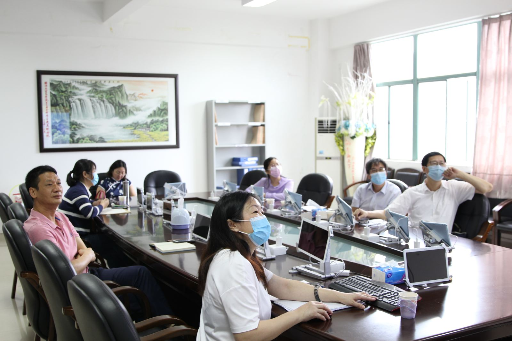
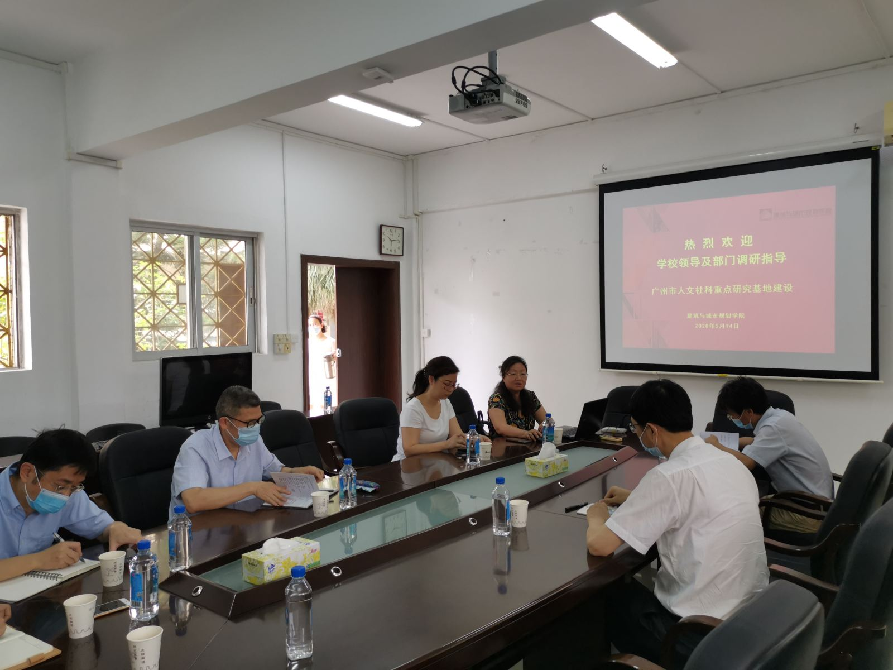
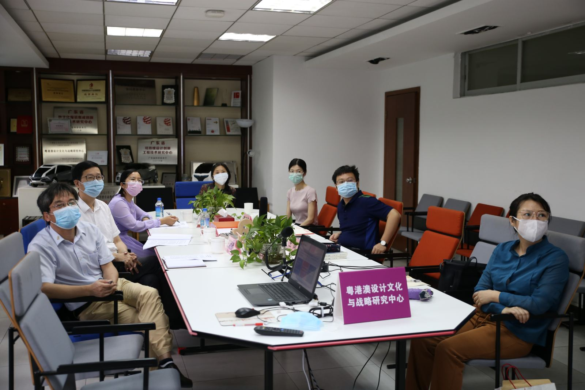

为推进我校广州市人文社科各基地平台建设及考核验收工作，2020年5月14日，陈为民副校长、科技与人文研究院王明亮副院长一行对我校相关基地及学院进行了调研及考核动员。

按市社科联的工作安排，我校的“广州市技术创新与经济转型研究中心”、“广州传统村落保护与利用研究基地”、“粤港澳设计文化与战略研究中心”（2018-2020）三年建设期已满，需今年参加验收考核。各基地负责人从社科研究、学科建设、学术交流、人才培养及为政府决策服务等方面分别汇报了基地取得的成绩及存在的问题。

陈为民副校长认真听取了三个基地的建设情况，充分肯定了各基地平台近三年的建设所取得的成绩，并提出了具体的指导意见。他强调基地平台对于相关学院学科建设的重要意义，要求各相关学院积极支持基地建设，各基地要进一步凝练基地研究方向，凸显特色，提升学术研究水平及咨政建言、服务社会能力，迎接基地考核验收，争取获得迎评促建的良好成绩。
经济与贸易学院、建筑与城市规划学院、艺术与设计学院和通识教育中心有关领导及基地骨干参加了本次调研。
